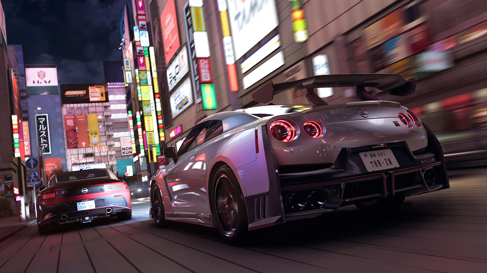

Forza Horizon 6 Japan's seasonal system delivers fresh content every week across four seasonal categories: Summer Thunder, Autumn Rally, Winter Drift, and Spring Circuit. Each season runs for approximately 7 weeks, with daily and weekly challenges that reward exclusive cars, clothing, and Forzathon Points. This guide explains how the seasonal system works and how to maximize your rewards each cycle.



Season Overview
Every week in FH6 Japan has three seasonal playlist tracks: Championships, PR Stunts, and Festival Activities. Complete them to earn Seasonal Tokens and unlock reward cars. Missing a season means waiting for its rerun — which happens roughly every 6 months for seasonal exclusive rewards.
| Season | Theme | Car Reward | Forzathon Bonus |
|---|---|---|---|
| Summer Thunder | Drift & Touge sprints | Nissan Silvia K's (1992) | 2x FP on drift events |
| Autumn Rally | Technical rally stages | Subaru WRX STI Rally (2008) | 2x FP on rally events |
| Winter Drift | Ice & snow challenges | Mitsubishi Evo VI Tommi Mäkinen | 2x FP on snow events |
| Spring Circuit | Track day & championships | BMW M4 GT4 | 2x FP on circuit races |
Reward Tiers Explained
Each week has three reward tiers based on your Seasonal Token accumulation. Tokens are earned by completing individual challenges within the playlist.
Bronze Tier: 1-50 Tokens
Forzathon Points (50-100), clothing items, and horn sounds. Accessible to casual players who complete most daily challenges.
Silver Tier: 51-150 Tokens
Exclusive car rarity upgrades, rare clothing sets, and 200-300 Forzathon Points. Requires consistent weekly effort.
Gold Tier: 151+ Tokens
Seasonal reward car (often exclusive and unavailable elsewhere), 500+ Forzathon Points, and a unique livery or outfit. The serious player's goal.
Forzathon Shop
The Forzathon Shop is a rotating store accessible from the Festival main menu. It sells exclusive cars and cosmetics for Forzathon Points earned through gameplay. Stock refreshes weekly on Thursday at 7:00 AM UTC. Popular items sell out fast — check weekly and plan your FP spending accordingly.
Typical Car Prices
Common exclusives: 300-500 FP. Rare barn find cars in the shop: 600-800 FP. Legendary cars: 1,000+ FP. Prioritize based on availability — some items appear only once per season.
Clothing & Cosmetics
Hats, jackets, wheels, and horn sounds range from 50-150 FP each. Most are cosmetic but some (specific wheel styles, rare horns) become unavailable after they rotate out.